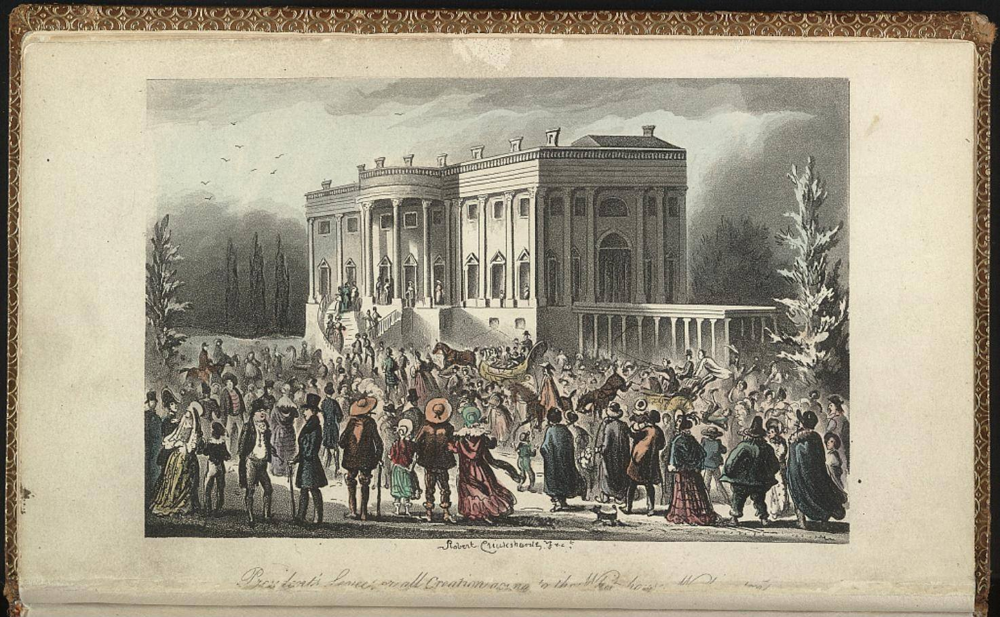

| Field | Detail |
| TOC Fit | Chapter 9 · Essay prompt 9.5 (Why Jackson Won in 1828); Essay prompt 10.1 (How Democratic Was Jacksonian Democracy?) |
| Why Here | A British caricaturist’s view of the crowd that poured into the White House after Jackson’s first inauguration, with horses, wagons, and people of every sort jostling at the door. Students can weigh it as an image of the “common man” taking possession of the presidency, while asking whether it records democracy’s arrival or mocks it. |
| Treatment | Public-domain image |
After Andrew Jackson took the oath of office on March 4, 1829, a huge crowd followed him from the Capitol to the White House, where an open reception had been announced. Thousands of supporters, many from the West and from the city’s working population, pushed into the mansion; china and glassware were broken, furniture was damaged, and staff reportedly moved tubs of punch onto the lawn to draw people outside. Jackson himself left by a side door or window. Admirers saw the day as the people claiming their government; critics such as Margaret Bayard Smith compared the scene to a mob. Robert Cruikshank (1789–1856), a London caricaturist and the elder brother of George Cruikshank, made this hand-colored aquatint as a frontispiece for The Playfair Papers, or Brother Jonathan, the Smartest Nation in All Creation (London: Saunders and Otley, 1841), a satirical British account of American manners. Cruikshank never visited the United States; his picture follows the published stories of the event. Editorial note. The Norton Online Reader image could not be consulted for this reader; this entry identifies it as the Library of Congress print of Robert Cruikshank’s “President’s Levee, or all Creation going to the White House,” which carries the same title and date. The printed title line is given below as recorded in the Library of Congress catalog. CAUTION: This is a later image made twelve years after the event by a British artist who had not seen it, for a book that mocked American democracy; it is an outsider’s satire, not an eyewitness record, and its details (horses at the door, the crush of bodies) exaggerate for comic effect. |
|
 |
|
UNIT 3 · AN EXPANDING NATION | HISTORY B17A | DANIEL GARZA, M.A.
|